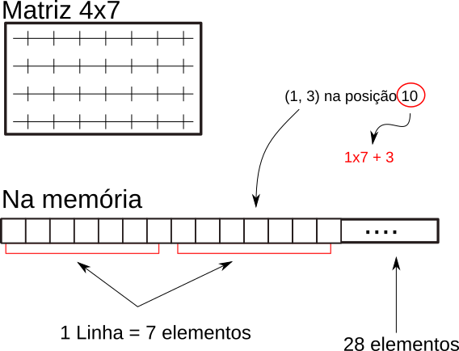

Matrizes em C¶
Em C precisamos nos preocupar com o layout de memória dos dados que armazenamos. No caso de matrizes, a maneira mais eficiente de fazê-lo é guardá-las de maneira linear. Colocaremos na memória uma linha depois da outra, como na figura abaixo.

Question
Em uma matriz de tamanho 4x7 (4 linhas, 7 colunas), qual é o elemento do vetor que representa a posição 2x5 (linha 3, coluna 6)? Considere que começamos a contar linhas e colunas do zero.
Details
Estamos considerando que começamos a contar as linhas e colunas do zero. A posição do vetor é 19. Este número é obtido pela expressão
i * c + j
ié a linha a ser acessadajé a colunacé o número de colunas da matriz
19 = 2 * 7 + 5
Um pouco de contexto: transporte coletivo¶
O transporte coletivo pode ser organizado em grandes terminais que ligam diferentes regiões da cidade. Podemos representar as ligações entre terminais usando uma matriz em que a posição i,j representa o número de ônibus que saem do terminal i e chegam no terminal j. Naturalmente as posições i,j e j,i tem o mesmo valor, pois os ônibus sempre saem de um terminal e retornam no mesmo dia.
Tarefa 1¶
Para cada terminal de ônibus, gostaríamos de descobrir o terminal destino que recebe menor quantidade de ônibus. Se um terminal não receber nenhum ônibus ele deve ser ignorado. Veja os exemplos abaixo. Tanto a matriz de entrada como o vetor de saída serão recebidos como argumentos.
Entrada
0 4 5 7 0
4 0 2 0 1
5 2 0 9 3
7 0 9 0 3
0 1 3 3 0
Saída
4
1
2
3
1
Example
Abra o arquivo solucao.c e modifique-o para passar nos testes. Para isto basta compilar o programa com as instruções abaixo e executá-lo.
gcc -Og -Wall solucao.c testes.c -o testes -lsystemd -lm
Tarefa 2¶
Também é importante identificar o quanto cada terminal está conectado com outros. Nesta tarefa você deverá encontrar
- o terminal que recebe a maior quantidade de ônibus
- o terminal que está conectado com a maior quantidade de outros terminais.
Entrada
0 4 5 0 1
4 0 0 0 1
5 0 0 9 3
0 0 9 0 3
1 1 3 3 0
Saída
O terminal 2 é o que recebe mais onibus (17 onibus)
O terminal 4 é o mais conectado (4 terminais)
Example
Abra o arquivo solucao.c e modifique-o para passar nos testes. Para isto basta compilar o programa com as instruções abaixo e executá-lo.
gcc -Og -Wall solucao.c testes.c -o testes -lsystemd -lm
Tarefa 3 (desafio)¶
Uma grande preocupação no transporte é que seja possível atravessar a cidade usando os ônibus disponibilizados. Gostaríamos de responder à pergunta: "é possível, partindo do terminal s, chegar ao terminal d?" Estamos interessados em uma resposta Sim/Não e não necessariamente na resposta que utiliza o menor número de ônibus. Veja os exemplos abaixo.
Example
Abra o arquivo solucao.c e modifique-o para passar nos testes. Para isto basta compilar o programa com as instruções abaixo e executá-lo.
gcc -Og -Wall solucao.c testes.c -o testes-t1 -lsystemd -lm
Desenhe os exemplos no papel. Será mais fácil de entender as respostas.
Exemplo 1¶
Entrada
0 2 3 0 0
2 0 1 0 0
3 1 0 0 0
0 0 0 0 5
0 0 0 5 0
No exemplo acima é impossível chegar do terminal 1 ao terminal 3.
Exemplo 2¶
Entrada
0 5 0
5 0 2
0 2 0
No exemplo acima é possível chegar do terminal 1 até o terminal 3 passando pelo terminal 2.